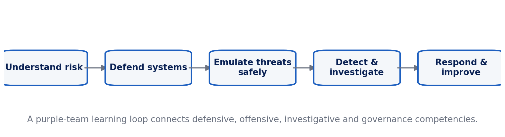

CHIATECH JOURNAL
SETEHEM · VOLUME 1 · ISSUE 1 · JULY 2026 · e011
PIONEER PUBLICATION · ACCEPTED ARTICLE · CURRICULUM AND COMPETENCY FRAMEWORK ARTICLE · CYBERSECURITY · COMPUTING · EDUCATION · WORKFORCE DEVELOPMENT
Integrating Defensive and Offensive Cybersecurity Education: A Lab-Based Competency Framework for Workforce-Ready Learning
CHIA Shiaondo Kenneth
CHIATECH Solutions and Resources Ltd, Abuja, Nigeria
ORCID: 0009-0009-6434-4586 · Correspondence: chiakenneth01@gmail.com
Article | Volume/Issue | Publication | ISSN | DOI |
|---|---|---|---|---|
e011 | 1(1) | Pioneer Issue · August 2026 | Pending assignment | Pending registration |
Abstract
Background: Cybersecurity education often separates defensive operations from offensive testing even though workforce practice requires professionals to understand how attack paths, controls, detection and response interact. Objective: This article develops a curriculum and competency framework that integrates defensive and offensive perspectives within authorized, isolated and ethically governed laboratories. Methods: A design synthesis mapped the source curriculum against the NIST Cybersecurity Framework 2.0, the NICE Workforce Framework for Cybersecurity, CSEC2017 curricular guidance and recent research on cybersecurity teaching. Results: The proposed architecture progresses through foundations and lab setup, defensive engineering, authorized adversary emulation, specialized domains, threat hunting/incident response, automation and governance. A purple-team learning loop—understand risk, defend, emulate threats safely, detect/investigate, respond/improve—connects technical tasks to organizational outcomes. Assessment emphasizes observable competencies through threat models, hardening plans, log analysis, vulnerability reports, secure configurations, incident reports and capstone exercises. Offensive content is bounded by written authorization, scoped targets, isolated environments, no external persistence and evidence-based reporting. Conclusion: Defensive and offensive knowledge should be integrated educationally but separated operationally by strict authorization and safety controls. Workforce readiness depends on demonstrated capability, ethical judgment and communication as much as on tool familiarity.
Keywords: cybersecurity education; NICE Framework; NIST CSF 2.0; ethical hacking; defensive security; cyber ranges; workforce development
1. Introduction
The source manuscript is structured as a practical handbook spanning threat landscapes, laboratory setup, network and endpoint defense, security monitoring, reconnaissance, vulnerability assessment, web/cloud/mobile security, threat hunting, incident response, automation, IoT/AI security, zero trust, governance and career preparation. That breadth contains the basis of a publishable curriculum contribution, but a scholarly framework requires clearer competency progression, assessment logic and ethical boundaries.
Cybersecurity itself is interdisciplinary. CSEC2017 emphasizes not only technology but people, processes, law, policy, risk and ethics. NIST's Cybersecurity Framework 2.0 organizes organizational cybersecurity around Govern, Identify, Protect, Detect, Respond and Recover, while the NICE Framework provides a common language for work roles, competencies and task/knowledge/skill statements. An education programme that focuses on isolated tools can therefore produce shallow familiarity without workforce-ready judgment.
2. Curriculum Design Principles
The first principle is defense-led purpose. Offensive techniques are taught to understand exposure, validate controls and improve detection—not to maximize exploitation capability in isolation. The second is environment isolation: laboratories should use purpose-built vulnerable systems, local virtual networks, cyber ranges or explicitly authorized targets. The third is evidence: students must document scope, hypotheses, observations, remediation and residual risk rather than simply 'getting access.'
The fourth principle is progressive complexity. Learners first understand assets, threats, networking, operating systems and logging; then harden and monitor systems; only then conduct constrained adversary emulation. The fifth is integration: every offensive lab should connect to a defensive question—what log was produced, which control failed, how can the signal be detected, and what mitigation reduces recurrence?

Figure 1. Purple-team competency loop connecting defensive and authorized offensive learning.
3. Seven-Layer Competency Architecture
Layer 1 establishes threat modelling, networking, operating-system fundamentals, risk and professional ethics. Layer 2 builds a safe lab environment and teaches asset inventory, baselines and change control. Layer 3 develops defensive engineering through segmentation, endpoint hardening, identity, secure configuration, logging and SIEM concepts. Layer 4 introduces authorized adversary emulation at a conceptual and controlled level: reconnaissance, vulnerability validation and attack-path reasoning against designated lab targets.
Layer 5 applies these competencies to web, cloud, mobile and other specialized domains. Layer 6 develops threat hunting, incident response, digital evidence reasoning and recovery. Layer 7 addresses automation, DevSecOps, zero trust, governance, supply-chain risk, AI security and career-role mapping. This sequence aligns technical practice with the updated NICE components, which now include competency areas such as DevSecOps, cryptography and AI security alongside role-based workforce descriptions.
4. The Purple-Team Learning Loop
The proposed loop begins with understanding risk: learners identify assets, threats, attack surfaces and business impact. They then defend the environment by applying controls and establishing observable telemetry. Authorized adversary emulation tests assumptions within scope. Detection and investigation follow, requiring students to trace events through logs and evidence. Finally, response and improvement convert findings into remediation, documentation and lessons learned. The loop is repeated with increasing complexity.
This structure prevents the common curriculum split in which 'red team' students learn to attack and 'blue team' students learn to defend without understanding each other’s evidence. It also mirrors professional practice: controls are hypotheses about risk reduction, and testing provides evidence about whether those hypotheses hold.
5. Competency-Based Assessment
Table 1. Integrating Defensive and Offensive Cybersecurity Education: analytical matrix.
Competency evidence | What the learner demonstrates | Assessment artifact |
|---|---|---|
Threat and risk reasoning | Identifies assets, threats, vulnerabilities, impact and priority. | Threat model / risk register. |
Defensive engineering | Applies and justifies protective controls and secure configurations. | Hardening plan + configuration evidence. |
Monitoring and detection | Interprets telemetry and distinguishes normal from suspicious activity. | Log/SIEM analysis and detection rationale. |
Authorized adversary emulation | Tests a scoped hypothesis without exceeding authorization. | Rules-of-engagement record + vulnerability report. |
Incident handling | Scopes, contains, communicates and documents an event. | Incident report / timeline / recovery plan. |
Secure development / cloud | Builds or reviews systems with security integrated in lifecycle. | Secure design review, IaC/DevSecOps evidence. |
Governance and communication | Maps technical findings to policy, risk and stakeholder decisions. | Executive briefing + remediation roadmap. |
6. Safety, Ethics and Legal Boundaries
Hands-on cybersecurity education must be explicit about authorization. Students should receive written scope, target identifiers, permitted techniques, time windows and data-handling rules before any adversary-emulation activity. Production systems, public internet targets and third-party accounts are outside scope unless separately and formally authorized. Persistence, credential collection or destructive actions should not be practiced outside purpose-built lab conditions.
Ethical assessment should be embedded in technical grading. A technically effective action that violates scope, damages availability or mishandles evidence should count as failure. Reports should distinguish observed facts, plausible risk and unverified assumptions. This reinforces professional judgment and reduces the misleading idea that cybersecurity competence is synonymous with exploiting systems.
7. Delivery Modalities and Inclusion
Recent systematic review evidence shows that effective online cybersecurity education commonly combines active learning, practical exercises, collaboration, case studies, virtual laboratories, simulations and project-based assessment (Ahmed et al., 2024). Virtualization enables repeatable practice and reduces hardware cost, but course design must account for student device limitations, bandwidth and accessibility. Preconfigured virtual machines or browser-based ranges can reduce setup friction; offline log datasets and packet captures can support analysis when live infrastructure is unavailable.
8. Programme Governance, Capstone Design and Workforce Alignment
A competency programme needs governance that is as explicit as its laboratory rules. Every practical module should identify the approved environment, responsible instructor, data-retention requirements, prohibited actions and procedure for stopping an exercise. Lab images should be resettable, credentials synthetic and network routes constrained so that student mistakes do not reach unrelated systems. Safety briefings should be assessed, not treated as administrative prefaces.
Capstone assessment should require integration across the purple-team cycle. A suitable scenario gives learners an organization profile, business-critical assets and a controlled lab environment. Teams create a threat model, establish baseline controls and telemetry, conduct a scoped security assessment, investigate the resulting evidence, prioritize remediation and brief both technical and non-technical stakeholders. The capstone is stronger when students rotate roles because workforce practice requires communication across security specialties.
Rubrics should distinguish technical correctness, scope discipline, evidence quality, risk reasoning and communication. A student should not receive high marks for finding many weaknesses if the assessment is poorly documented or exceeds authorization. Conversely, strong defensive work includes recognizing when a finding is a false positive, articulating residual risk and proposing proportionate remediation rather than recommending maximal controls regardless of cost or usability.
Workforce alignment should use the NICE Framework as a mapping resource rather than turning education into narrow job training. Programme outcomes can be connected to competency areas and work-role families while preserving foundational computing, ethics and adaptable problem-solving. Because the NICE components are updated as cybersecurity work changes, periodic curriculum mapping can reveal emerging gaps such as DevSecOps, supply-chain risk, cryptography and AI security.
Continuous programme improvement should draw on incident reports from labs, learner performance patterns, employer feedback and changes in threat and regulatory environments. The aim is not to chase every new tool. Stable competencies—understanding systems, reasoning about risk, validating controls, interpreting evidence, communicating findings and acting within authorization—allow graduates to adapt as tools and platforms change.
9. Conclusion
Cybersecurity education becomes more coherent when defensive and authorized offensive learning are connected through a purple-team cycle of risk, control, testing, detection, response and improvement. The framework derived from the source handbook preserves its practical orientation while aligning activities with recognized cybersecurity and workforce frameworks. The outcome is not a collection of tools but a progression of observable competencies bounded by ethics, authorization and evidence.
Declarations
Declaration | Statement |
|---|---|
Ethics | Not applicable; this article reports no new human- or animal-participant research. |
Funding | No external funding was reported for this article. |
Competing interests | The author declares no competing interests. |
Data availability | No new dataset was generated; the analysis is based on the cited literature and publicly documented sources. |
Author contributions | Chia Shiaondo Kenneth: conceptualization, source framework, critical synthesis, framework development, interpretation and manuscript authorship. |
AI/editorial preparation | The article was substantively reconstructed from the author-supplied manuscript and strengthened with current public scholarship. No empirical results were invented; claims from vendor or institutional sources are identified and interpreted cautiously. |
References
Ahmed, A., Watterson, C., Alhashmi, S., & Gaber, T. (2024). How universities teach cybersecurity courses online: A systematic literature review. Frontiers in Computer Science, 6, 1499490. https://doi.org/10.3389/fcomp.2024.1499490
Joint Task Force on Cybersecurity Education. (2017). Cybersecurity Curricula 2017: Curriculum guidelines for post-secondary degree programs in cybersecurity. ACM, IEEE Computer Society, AIS SIGSEC, and IFIP WG 11.8. https://doi.org/10.1145/3184594
National Institute of Standards and Technology. (2026). NICE Framework Components, version 2.2.0. NIST National Initiative for Cybersecurity Education.
Pascoe, C., Quinn, S., & Scarfone, K. (2024). The NIST Cybersecurity Framework (CSF) 2.0 (NIST CSWP 29). National Institute of Standards and Technology. https://doi.org/10.6028/NIST.CSWP.29
Petersen, R., Santos, D., Smith, M. C., Wetzel, K. A., & Witte, G. (2020). Workforce Framework for Cybersecurity (NICE Framework) (NIST SP 800-181 Rev. 1). National Institute of Standards and Technology. https://doi.org/10.6028/NIST.SP.800-181r1
Suggested citation: Chia, S. K. (2026). Integrating Defensive and Offensive Cybersecurity Education. CHIATECH JOURNAL · SETEHEM, 1(1), e031.
© 2026 CHIA Shiaondo Kenneth. Published by CHIATECH JOURNAL · SETEHEM under the Creative Commons Attribution 4.0 International (CC BY 4.0) licence.